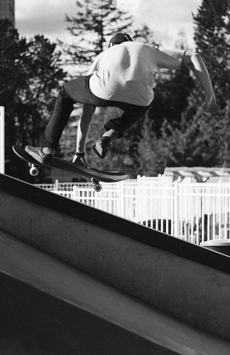

<div class="container__col-sm-10 container__col-md-offset-1">
  <div class="container__row">
    <div class="container__col-md-3 container__col-sm-12">
      <h2>Clayton Hebenik</h2>
      <!-- <p>- UI/UX Designer<br/>
        - Front-end Web Developer</p> -->
      <!-- <p><a href="https://www.linkedin.com/in/clayton-hebenik/" target="_blank"><i class="fa fa-linkedin-square fa-lg"></i></a>
        <a href="https://twitter.com/claytonhebenik" target="_blank"><i class="fa fa-twitter-square fa-lg"></i></a>
      </p> -->
      <!-- <h4>Skills:</h4>
      <ul>
        <li>User Interface Design</li>
        <li>Front-end Development</li>
        <li>User Experience Design &amp; Prototyping</li>
      </ul> -->
      <p class="lead">I’m a designer and front-end developer with a passion for crafting user-centered experiences that are memorable and exciting.</p>
      <p><a href="Clayton_Hebenik_resume.pdf" target="_blank" class="button"><i class="fa fa-file-pdf-o"></i>  Resume</a></p>
    </div>
    <div class="container__col-md-5 container__col-sm-12">
      <div class="container__row">
        <div class="container__col-md-12 container__col-sm-12">
          <!-- <p class="lead">I transform problems into useful experiences</p> -->
          <p><!--I'm a UI/UX Designer in Vancouver, BC with a passion for creating experiences that are engaging, intuitive, and highly usable. -->Currently I'm a masters student at <a href="http://thecdm.ca" rel="nofollow" target="_blank">The Centre for Digital Media</a>, in Vancouver, BC finishing a Master of Digital Media Degree.</p>
          <p>I began working as a web designer and front-end developer in Calgary, AB in 2011, where I worked in collaborative teams in an small agency, as well as independently as a freelancer.</p>
          <p>I focus on user centred design and usability and actively seek out learning opportunities to stay up to date with the latest trends and web standards. I enjoy tackling new challenges whether it's learning something new or skateboarding and hiking.</p>
          <p>Currently, I'm doing freelance work for a small number of clients while finishing my studies and looking for full-time work. If you're interested in working together, send me an email at <a href="mailto:hello@claytonhebenik.com">hello@claytonhebenik.com.</a>
          <!-- <p>Clayton graduated in 2011 with a BFA in New Media from the University of Lethbridge, Alberta. Since then, he has been working in the web industry, starting in a small web design agency as a junior front end developer.</p>
          <p>With five years of industry experience, he has been able to develop and refine his skills in web design, responsive design, and front end web development. Recently, he has been pursuing a Master's of Digital Media degree at The Centre For Digital Media in Vancouver, BC, gaining experience as a UI/UX Designer in a various multiple-disciplinary teams, working on everything from virtual reality games to mobile applications.</p> -->
        </div>
      </div>
    </div>
    <div class="container__col-md-4 container__col-sm-12">
      
    </div>
  </div>
</div>
